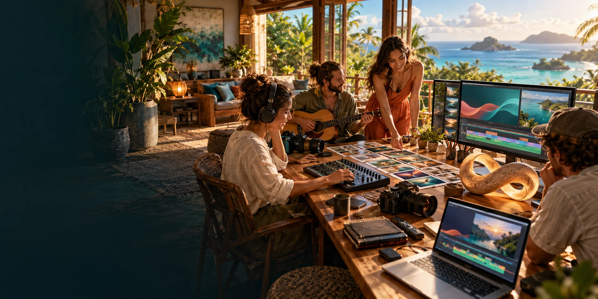
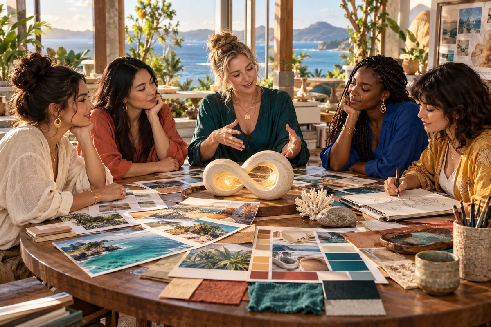

Try a direction.
Compare a few possibilities before making more.

A creative field school Music · learning · imagination
Explore how a council of perspectives, thoughtful editing and reusable worlds could help you make music videos, learning films and shorts.
Original generated concept artwork · a possible workshop, imagined together
Compare a few possibilities before making more.
Use what you have, then add tools where they help.
Observe the result and choose what comes next.
Start with something you care about
One workshop, several paths. You can move between them as your project develops.
Let a song suggest its own rhythm, imagery and visual world.
02 / TEACH / EXPLOREBuild around a clear question, a worked example and a chance to think.
03 / DISCUSS / CHOOSEExplore contrasting perspectives and make a better-informed creative choice.
04 / BUILD / REVISITTry a small Blender world and a repeatable handoff into Resolve.
Different perspectives, one creative choice
The 24 mythic mentors form two complementary councils: twelve Civilisation Pillars for what you build, and twelve Cultural Anchors for identity, heritage and values. Begin with a pair and let Aura connect the specialist knowledge, creative intention and project memory.
The wider 500 Queens programme concerns real participants. The fictional council is one proposed supporting tool.
Meet your possible panel
A connected workshop
These are proposed connections to explore and test. Each project keeps its own purpose.
Explore options and assumptions.
Track direction, assets and jobs.
Create graphics and reusable scenes.
Assemble, listen, review and deliver.
Choice before commitment
Your own footage, local tools and existing artwork may be enough to begin. If a paid service could help, compare what it provides, how it bills and what changes when you swap it.
The cost planner uses dated USD rates and your chosen quantities. You can edit the rates and allow for alternative attempts.
Explore the cost planner